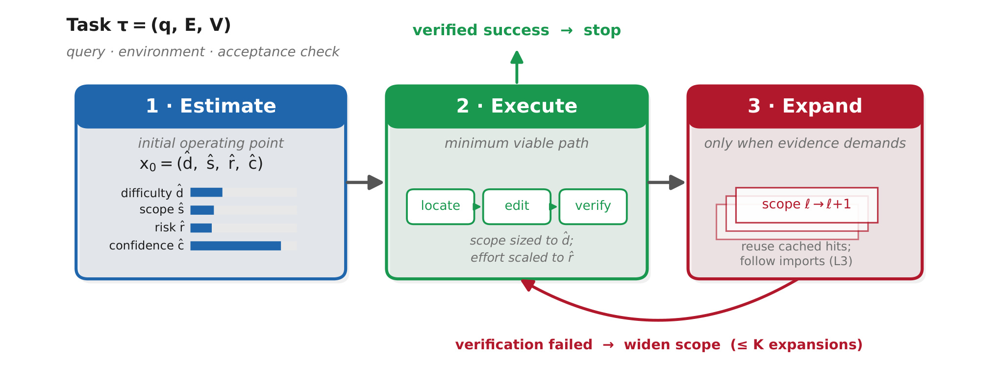
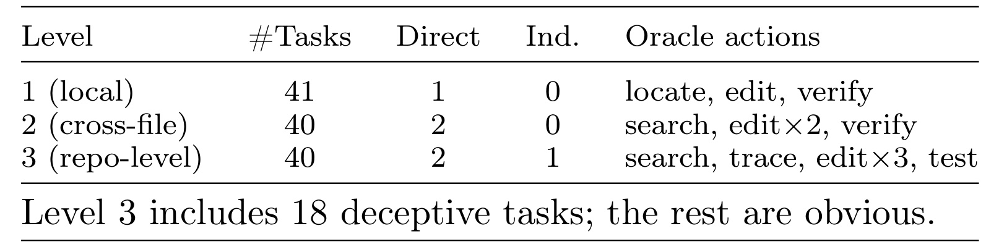
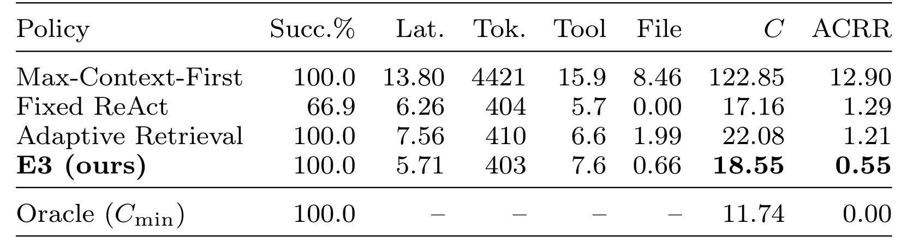
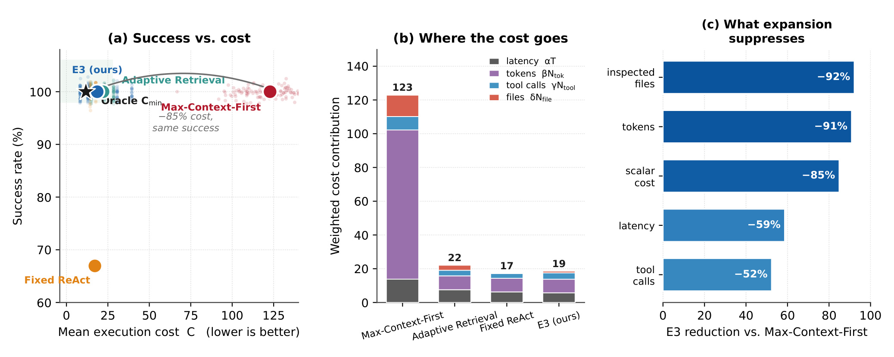
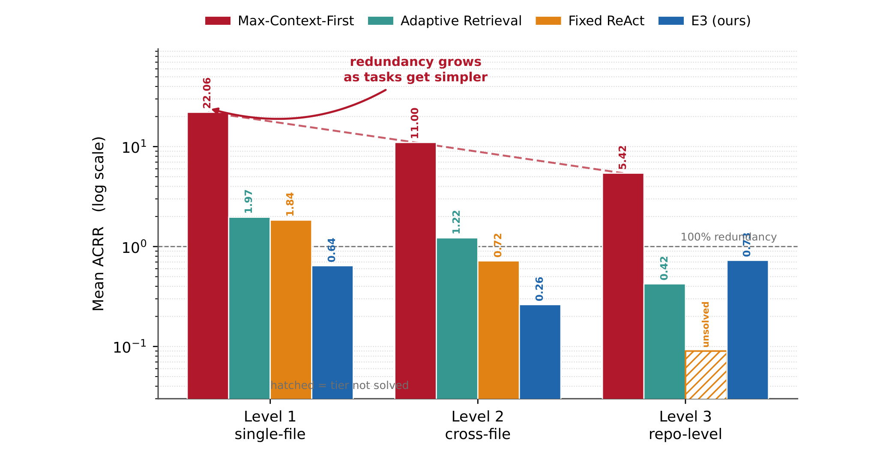
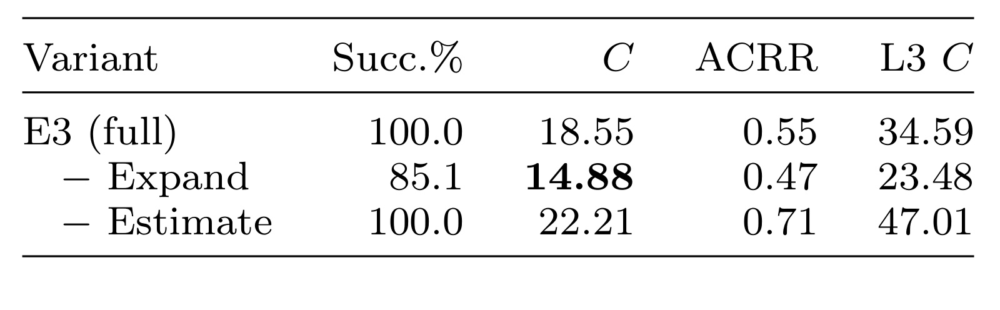
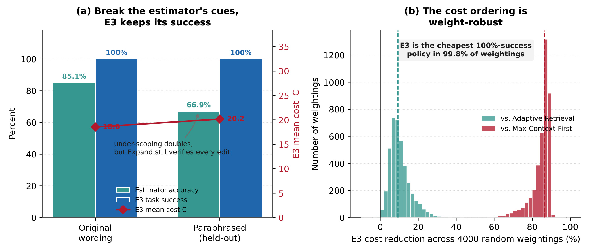
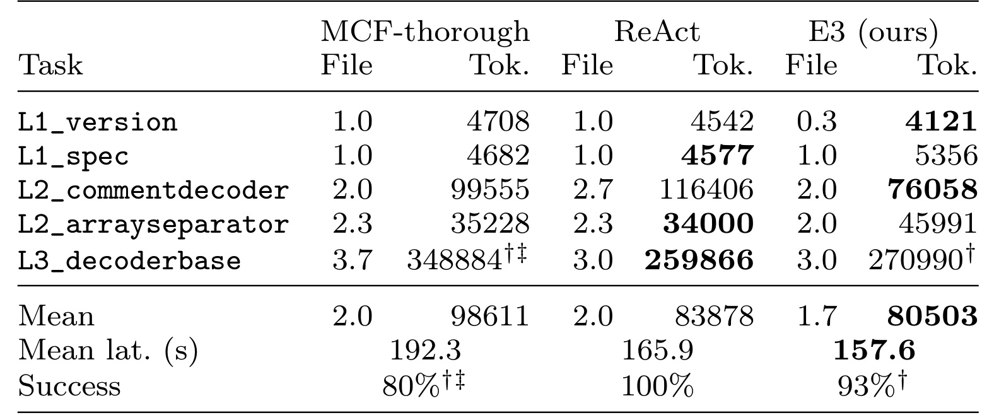
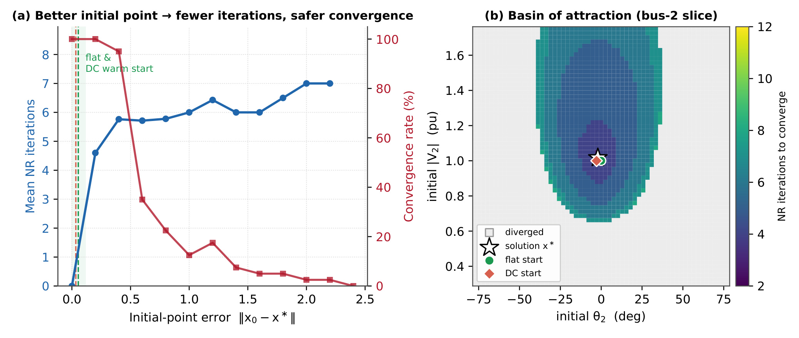

田纳西大学 E3：让 AI Agent 先判断任务是否简单
这篇论文研究的不是如何让 Agent 在困难任务上“想得更多”，而是更基础的一步：在行动之前，先判断任务究竟需要多大范围的上下文、工具和验证。论文题为 Do AI Agents Know When a Task Is Simple? Toward Complexity-Aware Reasoning and Execution，作者 Junjie Yin 与 Xinyu Feng；一作主机构为田纳西大学诺克斯维尔分校，Junjie Yin 同时具有 Microsoft 合作背景。论文于 2026 年 7 月 14 日公开在 arXiv:2607.13034，作者已开放包含 E3、MSE-Bench、LLM-Case 与潮流算例的官方代码仓库。
LLM Agent 往往不先判断任务真正需要多少工作，而是默认最大上下文优先：重复读取文件、依赖与架构，把一行修改扩张成小型代码库审计。真正缺失的是在投入预算前估计任务难度、必要信息与最短可靠执行路径。
1. 背景和问题
工具型 Agent 已经能够搜索仓库、读取文件、修改代码并执行测试，但“能完成”不等于“用合适的成本完成”。论文从一个刻意简单的网站维护任务出发：页面中有两个邮箱图标，要求把第二个图标的 Font Awesome 标记替换成第一个图标已经使用的本地 SVG 标记。目标文件和替换模式都明确，所需资源已经存在，也不涉及架构变化、外部检索、编译或推送。对熟悉项目的人而言，这近似一次关键词定位和两行修改。然而，能力很强的 Agent 仍可能重新浏览目录、读取图标库、检查依赖、分析项目结构，再做本来几秒即可完成的修改。最终补丁正确，轨迹却像一次小型审计。
作者把这种现象与知识不足、检索失败和记忆缺失区分开来。Agent 可能已经拥有所有必要知识，也能在第一次定位后修改正确；浪费发生在它无法快速判定“哪些信息对当前变化无关”。面对不确定性，最大上下文优先策略把尽可能多地收集信息当成默认保险。对真实的库级重构，这种保守可能合理；对局部字面量替换，它却让固定开销远大于任务本身。于是论文的问题不是鼓励 Agent 无条件少读、少测、少思考，而是要求执行努力与任务工程现实相匹配：简单任务应快速收敛，复杂任务仍要逐步获得充分覆盖。
这一视角与常见的 adaptive computation 或 routing 有明显区别。自适应计算通常调节“还要生成多少 token、增加多少深度”；路由器通常从固定菜单中选择便宜模型、昂贵模型、直接回答或完整 Agent。E3 想预测的不是一个标量预算或一个引擎标签，而是任务形状：可能涉及哪些文件、需要哪些工具、应走哪些步骤、风险有多高，以及什么验证足以停止。结构化范围会直接参数化后续计划。更重要的是，E3 不把首次估计当成不可撤销的路由决策；它允许初始判断偏乐观，但用验证失败后的逐级扩域恢复误判。
论文提出三个研究问题。第一，能否形式化“一项任务本来应该花多少工作”，进而度量实际轨迹偏离最低充分轨迹的程度？第二，Agent 能否用很小的前置成本估计执行范围，并据此选择最短可靠路径？第三，从最小路径出发、只在验证失败时扩大上下文，能否同时保留成功率并减少成本？这三个问题共同改变了效率评测口径：只报告 token 或延迟不够，因为廉价但失败的策略不应被奖励；只报告成功率也不够，因为全量读取后成功会掩盖与任务无关的浪费。
作者为此选择能力不变量模拟器，而不是直接把某个商业模型作为主实验对象。模拟器保证所有策略只要看到了相关位置就具有相同编辑能力，由轨迹决定能否到达直接站点或隐藏在别名、再导出背后的间接站点。这样可以为每个任务构造精确 oracle，严格测出最低成本，而不把模型采样运气混进执行冗余。代价是外部效度有限：主结果首先是“若编辑能力相同，不同执行策略会产生怎样的轨迹成本”，不是对部署中任意 Agent 的普遍统计。论文随后用真实 gpt-4o harness 做伴随核验，正是为了检查这种受控现象离开模拟器后还能剩下多少。
从有界理性角度看，执行成本本身就是决策的一部分。一个为消除极小风险而无限增加上下文的 Agent，即使最后正确，也没有优化自身计算；相反，一个仅凭局部线索快速提交错误补丁的 Agent，也不能因 token 少而被称为高效。论文因此把成功约束放在成本最小化之前，并把失败单独报告。这种处理还避免了另一个常见混淆：复杂任务需要更多文件和测试是合理成本，只有相对于该任务最低充分路径的超额部分才是冗余。以逐任务 oracle 为分母，正是为了让局部修改与库级重构处在可比较但不被绝对规模抹平的坐标中。
这也解释了论文为何强调“execution scope”而不只讨论 reasoning length。Agent 可能只输出很短的思维文本，却通过工具拉取大量文件；也可能生成较长的计划，但只触碰一个必要对象。若只看可见推理 token，前一种隐性上下文开销会被漏掉。把延迟、token、工具调用和完整文件数并列，一方面更贴近用户感受到的等待与费用，另一方面能定位浪费发生在决策、检索、读取还是验证。E3 要优化的是整条行动轨迹，而不是让模型把同样的全量探索写得更短。
这项工作与推荐系统工程也有直接联系。在线召回、排序和特征流水线同样充满不同范围的变更：改一个配置默认值、修一个局部特征映射，与跨服务变更 embedding 协议，显然不应触发同样的代码搜索、离线回放和全链路验收。若 Agent 能估计执行范围，它可以把低风险局部操作快速闭环，把高风险跨模块任务升级到依赖追踪、回归测试甚至影子流量。这里可迁移的不是论文中的词法规则，而是“先预测任务形状、再按证据扩域”的控制结构。
2. 方法
2.1 最小充分执行与 ACRR
作者先把任务写成 $\tau=(q,E,V)$：$q$ 是自然语言请求，$E$ 是代码仓库等环境，$V$ 是返回成功或失败的验收检查。Agent 产生工具调用轨迹 $\pi=(a_1,a_2,\ldots,a_T)$，动作可以是目录浏览、搜索、区间读取、完整检查、依赖追踪、编辑、推理和验证。轨迹成本不是单一 token，而是四个维度的加权和：
符号解释：$T_{\mathrm{lat}}$ 是墙钟延迟，$N_{\mathrm{tok}}$ 是推理与上下文 token，$N_{\mathrm{tool}}$ 是工具调用次数，$N_{\mathrm{file}}$ 是被完整拉入上下文的不同文件数；$\alpha,\beta,\gamma,\delta$ 将四个轴变为可比较成本。参考设置中四个权重依次为 1.0、0.02、0.5、1.5，完整读取大文件会同时增加 token、文件和时间，因此文件权重较高。作者仍单独报告各原始轴，以免结论只由某个权重选择驱动。
接着，最低充分轨迹不是“动作最少的任意尝试”，而是满足可靠性约束的最低成本轨迹：
符号解释：$\pi^{\star}$ 是任务 $\tau$ 的 minimum-sufficient trajectory，$\epsilon$ 是可接受失败概率，$C_{\min}(\tau)=C(\pi^{\star})$ 是这项任务“本来应付出的成本”。约束项很关键：如果删掉验证、遗漏依赖后快速失败，成本虽低，却不构成有效效率。MSE-Bench 能明确给出每个任务的 oracle 轨迹，所以 $C_{\min}$ 在受控环境中是测量量，不是事后猜测。
在此基础上，作者定义 Agent Cognitive Redundancy Ratio：
符号解释：$C_{\mathrm{act}}$ 是策略实际成功轨迹的成本，$C_{\min}$ 是同一任务的 oracle 最低成本。ACRR 为 0 表示没有相对冗余；ACRR 为 4 表示实际花了最低成本的五倍，即多出 400%。该指标只对成功运行定义，失败另报成功率。它的价值不在复杂公式，而在逐任务归一化：同样多花 10 个成本单位，对最低成本为 2 的局部修改和最低成本为 50 的库级重构，意义完全不同。
2.2 Estimate：构造可修正的初始运行点
E3 的前置估计把查询、环境廉价探针和历史经验映射成结构化状态：
符号解释：$q$ 是任务描述，$E$ 是环境，$M$ 是过去经验；$\hat d$ 是估计难度，$\hat s$ 是涉及文件或站点的范围，$\hat r$ 是风险，$\hat c$ 是置信度。这个 $x_0$ 被称为初始运行点。它不必一次给出最终答案，只要把 Agent 放到一个足以开始、可由验证修正的工作区域。与只预测“高/低 effort”的路由器相比，$x_0$ 同时说明从哪里开始、读多大范围、用何种验证强度。
参考估计器刻意简单且透明：若指令同时给出文件名、被引号包围的字面量和“在某文件中替换”之类局部动词，就判断为单文件修改；若出现“整个代码库”“所有调用点”“再导出”等广域线索，就判断为库级修改；其他情况至多执行一次搜索探针，依据关键词出现数量区分局部与跨文件任务。若措辞显得局部，搜索却返回多个位置，估计器降低置信度。它不是高能力模型，而是对“廉价元判断能否改变轨迹”的最小实例。

Figure 1 把这个结构化判断如何进入行动画得很清楚。左侧 Estimate 不是长时间分析，而是生成难度、范围、风险与置信度四元组；中间 Execute 只走与该状态匹配的 locate、edit、verify 最小路径。验证成功立即从上方退出，防止在答案已经足够时继续收集上下文。只有失败证据出现，右侧 Expand 才把范围从 $\ell$ 提升到 $\ell+1$，并复用缓存命中、到 Level 3 时继续跟踪 import。底部回路回到 Execute，说明扩域不是另起一次全库审计，而是在已有信息上增加一层覆盖。风险估计还决定验证轻重，意味着“最小”并不等于省略验收，而是选择与失败代价匹配的验收。核心贡献不是“少读文件”这条口号，而是把乐观起点与可验证、单调的恢复路径绑定。
2.3 Execute 与 Expand：范围分级而非全量重启
执行阶段将范围分成三级。Level 1 只定位单个站点并编辑；Level 2 复用估计时的搜索命中，读取并修改直接出现的位置；Level 3 再增加 dependency trace，沿 importer 找到 grep 无法命中的别名或再导出站点。风险同时决定验证强度：低风险局部变化可做局部检查，高风险库级变化运行更重的验收。每一级都禁止读取当前范围以外的上下文，因此成本随着证据而增长，不随着“可能还有风险”的想象增长。
Algorithm 1 的控制流很短：先计算 $x_0$，令初始层级 $\ell=\hat d$ 并缓存搜索命中 $H$；执行后若 $ok=false$，且 $\ell<3$、扩展次数 $k<K$，则只令 $\ell$ 增加一级并再次执行。这里有三个容易忽略的细节。其一，扩展是单调的，能在最坏情况下逐渐接近全面策略；其二，搜索结果会复用，失败不会把已付成本清零；其三，停止由验收而非自我感觉决定。若验收检查太弱，E3 会把错误当成成功而过早停止；如果检查过重，局部任务又会被验证成本淹没。因此 E3 的可靠性不仅依赖范围估计，也依赖 $V$ 是否真的对应任务完成条件。
Estimate 与 Expand 的互补关系也解释了为什么“总从最小范围开始”并不等价于 E3。没有 Estimate，每个跨文件任务都要经历多轮失败再升级，虽然最终可靠，成本会集中到难任务；没有 Expand，廉价估计一旦低估隐藏依赖便直接失败。E3 允许估计器便宜且偏乐观，因为恢复机制承担安全责任。对生产 Agent，这意味着估计器未必要比主模型更大；更重要的是范围层级、验证信号、缓存复用和升级上限必须被工具框架显式表达。
3. 实验结果
3.1 MSE-Bench、oracle 与对照策略
MSE-Bench 使用确定性离线环境和固定随机种子 20260712，共 121 个程序化代码编辑任务。所有策略在看到相关内容后具有相同编辑能力；直接站点可通过搜索或读取变得可编辑，间接站点只有完整检查并进行依赖追踪后才能发现。这一设计把“模型是否碰巧写对补丁”固定住，只比较策略选择看什么、看多少以及何时验证。每个任务都附带 minimum-sufficient oracle，因而能计算精确 $C_{\min}$。

Table 2 显示三个层级并非只按描述长度划分。41 个 Level-1 任务只有一个直接站点，oracle 是定位、编辑、验证；40 个 Level-2 任务有两个直接站点，必须搜索并修改两处；40 个 Level-3 任务除两个直接站点外还有一个间接站点，需要 dependency trace 后修改三处并运行重测试。其中 18 个 Level-3 任务使用看似局部的措辞，构成对乐观估计的蓄意陷阱，其余 22 个明确暴露库级范围。数据集只来自少数任务原型和随机标识、干扰文件，因此适合精确测冗余，不适合代表开放世界代码任务的语义多样性。
作者比较四种策略。Max-Context-First（MCF）遍历目录、完整读取所有文件、分析架构后编辑并运行重检查，是“先收集一切”的上界压力模型，作者明确不声称真实 Agent 会机械读取整个仓库。Fixed ReAct 固定执行搜索、读取命中、编辑、测试，不适应范围。Adaptive Retrieval（AR）是更强对照：它依据搜索 footprint 调节动作，跨文件时跟踪 import，因而解决所有任务，但局部任务仍完整读取命中文件并运行重检查。E3 则按估计范围起步，失败后扩域；Oracle 只用于定义最低成本。
3.2 主结果：全成功不等于同等高效

Table 3 的首要阅读顺序是先看成功率，再看成本。MCF、AR 与 E3 都达到 100%，Fixed ReAct 只有 66.9%，因为它在全部 40 个 Level-3 任务上都到不了间接站点。Fixed ReAct 的成本 17.16 看似比 E3 的 18.55 更低，但它不是可靠策略，且 ACRR 1.29 只在其成功的 81 个任务上计算。三个全成功策略中，MCF 平均成本 122.85、ACRR 12.90；AR 降至 22.08 和 1.21；E3 进一步降至 18.55 和 0.55。相对 MCF，E3 延迟下降 58.6%、token 下降 90.9%、工具调用下降 52.3%、完整检查文件下降 92.2%、总成本下降 84.9%。
更有说服力的比较不是 MCF，而是同样全成功且已经自适应的 AR。E3 相对 AR 的总成本仍低 16.0%，检查文件少 66.8%，但工具调用约多 14%。这项交换符合架构：E3 为隐藏复杂度付出“先做最小检查、失败后再升级”的额外调用，AR 则提前完整读取并跟踪。若工具调用固定开销非常高、文件很小，E3 的优势可能缩小；如果上下文读取昂贵，E3 的范围控制更有价值。

Figure 2(a) 将成功率与平均成本放在同一平面：Fixed ReAct 落在低成本但低成功区域，MCF 位于 100% 成功却极高成本的右端，AR 靠近左上，E3 最接近 oracle。中图揭示 MCF 成本主要来自 token 与完整文件读取，而不是编辑动作本身；右图则显示 E3 最大降幅也集中在检查文件和 token。E3 的工具调用柱并没有像文件轴那样接近 oracle，因为 18 个低估任务需要额外验证和升级；这说明它以少量控制调用换取少读大量上下文。由此可见，受控实验中的 85% 不是因为 E3 学会了更便宜的补丁，而是它避免把无关文件拉入上下文。这个区分很重要：若真实任务的必要文件本来很多，或测试占总成本绝大多数，节省比例不会保持同一数量级。
3.3 难度分层、消融与鲁棒性

Figure 3 给出论文标题最直接的证据。MCF 的 ACRR 在 Level 1、2、3 分别为 22.06、11.00、5.42，简单任务上的相对冗余最大。作者没有把它包装成意外规律，而是明确承认其中有机械成分：MCF 无论任务难度都读取近似固定数量的文件，实际成本变化不大；分母 $C_{\min}$ 随层级上升，因此同样固定浪费在简单任务上会得到更大比率。E3 的三个值为 0.64、0.26、0.73，成功覆盖全部层级；AR 为 1.97、1.22、0.42。值得注意的是，在最难的 Level 3，AR 反而比 E3 更省，因为 E3 会在 18 个欺骗性任务上先低估一次再扩域。论文的优势主要来自 Level 1/2，E3 分别比 AR 便宜约 45% 和 43%，并不是所有难度都全面领先。

Table 5 进一步拆开两项机制。去掉 Expand 后，成本从 18.55 降至 14.88，ACRR 从 0.55 降至 0.47，但成功率只有 85.1%：恰好丢失 18 个措辞欺骗性的 Level-3 任务。低成本来自没有为失败负责，不能视为改进。去掉 Estimate 后，策略总从最小范围出发，Expand 仍可使成功率保持 100%，但总成本升至 22.21，Level-3 成本从 34.59 升至 47.01，较完整 E3 高约 36%。总成本增加 20% 而成功率不变，量化了“盲目从最小开始”反复升级的代价。这个对照也排除了单靠扩域就足够高效的解释。因而 Estimate 负责减少不必要扩展，Expand 负责修复低估；二者缺一时，要么可靠性下降，要么复杂任务反复升级。

Figure 5 处理两个可能推翻主结论的疑问。左图把所有指令改写为与估计器关键词列表不相交的措辞，并移除“明确文件加引号字面量”快路径。估计器准确率从 85.1% 降至 66.9%，被低估任务从 18 个增至全部 40 个 Level-3 任务；E3 成功率仍是 100%，平均成本仅从 18.55 升至 20.17，增幅 8.7%，仍比 MCF 低约 84%、比 AR 低约 9%。这说明成功保持来自验证扩域，而不是词法规则恰好匹配模板。右图扫描 4000 组广泛随机权重，允许 token 或文件权重为零；E3 在 99.8% 采样中仍是最便宜的全成功策略。即使令 $\delta=0$，它也在 96.7% 权重下比 AR 便宜。剩余 0.2% 的反例同样重要：当成本结构极端偏向 E3 多出的工具调用时，AR 可以更优。
3.4 真实模型核验：效应变小且并不均匀
LLM-Case 将同一问题放进真实的 toml 0.10.2 开源库。三种策略只由不同 system prompt 表达，共用 list、grep、read、edit、run_tests、finish 六个工具；模型自己选择动作。五个任务覆盖两个局部修改、两个跨文件类名修改和一个措辞看似局部但必须更新 ordered.py 子类的库级修改。成功由隐藏 grader 实际运行 pytest 判定，oracle 则让 gold patch 经过同一组计量工具，确认最低轨迹需要一、二或三个文件。作者使用 gpt-4o，对每个策略—任务组合运行三次。

Table 8 首先否定了模拟器最夸张的外推：即使 system prompt 明确要求“先彻底阅读”，真实 gpt-4o 也只检查约一到四个文件，没有机械读取八个以上文件。三种策略在两个 Level-1 任务上都约 4.1k—5.4k token，E3 的估计步骤大致成本中性；在较小的 L2_arrayseparator 上，E3 的 45,991 token 还是三者最高。它最明显的收益出现在大文件 L2_commentdecoder：E3 为 76,058 token，thorough 为 99,555，ReAct 为 116,406，因为少一次重复读取大型 decoder.py 会显著改变总量。
汇总上，E3 平均 80,503 token、157.6 秒、检查 1.7 个文件；ReAct 为 83,878 token、165.9 秒、2.0 个文件；thorough 为 98,611 token、192.3 秒、2.0 个文件。E3 相对 thorough 的 token 和延迟约低 18%，相对 ReAct 分别约低 4% 和 5%，远小于模拟器的 85% 成本降幅。成功率方面，ReAct 是 100%，E3 是 93%，thorough 是 80%；E3 的一个失败来自 provider HTTP 429，而非错误补丁，但这仍说明最重轨迹会遇到现实速率边界。Level-3 每种策略都消耗约 26万—35万 token，thorough 三次全失败，ReAct 三次成功，E3 两次非限流运行成功。由于只有一个模型、五个任务、每格三次且受低速率限制，这里只能说 E3 在该 case study 中总体最轻、最快，不能说它稳定支配每项任务或证明真实 Agent 普遍节省 85%。
3.5 电力系统初始运行点类比
作者用三总线 AC 潮流的极坐标 Newton–Raphson 求解解释“初始运行点”为何有工程意义。该算例测量不同初值 $x_0$ 到解 $x^{\star}$ 的误差如何影响迭代次数和是否收敛。它不是 Agent 侧额外实验，也不参与 E3 成本结论；它服务于设计直觉：廉价但结构化的起点不需要等于答案，只要进入可收敛区域，就能缩短后续修正。

Figure 7(a) 中 flat start 与 DC warm start 位于低误差区域，均以约三次迭代达到 100% 收敛；随着初始点远离解，平均迭代数上升，收敛率在误差约 0.6 时已降至 35%，误差超过约 2.4 后接近零。右侧吸引域图把同一关系画成几何区域：真实解、flat start 和 DC start 都位于较深的收敛区域，远处初值进入灰色发散区。颜色越暗表示达到解所需迭代越少，外围绿色区域仍能收敛但要更多步，灰色则完全发散；这比单看平均曲线更直观地显示好初值扩大可靠工作余量。对应到 E3，$x_0$ 的作用是把执行放进“可通过少量验证修正”的范围，Expand 类似在偏离时控制性扩大搜索。但数值求解的连续吸引域不等同于代码仓库的离散依赖图，Figure 7 只能解释动机，不能替代 MSE-Bench 或真实模型实验。
4. 总结
4.1 我的判断
E3 最值得保留的贡献是把 Agent 效率问题从“生成多少 token”推进到“选择什么执行范围”。Minimum-sufficient execution 先加可靠性约束，再最小化轨迹成本；ACRR 用逐任务 oracle 归一化成功后的浪费；Estimate 给出结构化任务形状；Expand 则让廉价、乐观的判断不会因一次低估直接牺牲可靠性。受控实验清楚显示：当编辑能力固定时，最大上下文优先的固定开销会在简单任务上形成最大相对冗余，E3 能把上下文支出集中到验证真正要求扩域的任务。
证据强度需要分层阅读。121 个模拟任务、held-out 措辞和 4000 组成本权重对“架构在该模拟器内稳健”提供了扎实证据；真实 gpt-4o harness 则说明前沿模型本身已相当克制，E3 的优势缩小为总体约 4%—18%，并且在单个跨文件任务上可能更贵。因而合适结论不是“Agent 应永远先少读”，而是“执行框架应显式表示范围、验收与升级，并对不同任务测量轨迹成本”。
4.2 工程启发与复现建议
第一，在代码与推荐系统 Agent 中，把 scope level 变成可观测状态，而不是隐藏在模型自然语言推理里。局部配置变更、直接多点修改、跨模块隐式耦合可以对应不同依赖追踪和回归测试套餐；每次升级记录触发它的失败证据。第二，先校准验收检查再训练估计器。弱 oracle 会让最小路径过早通过，过重 oracle 则把任何局部任务都拖回全链路成本。第三，复现时必须同时报告成功率、token、完整文件数、工具调用和延迟，并把限流、步数耗尽、错误补丁分开；否则“少 token”与“没做完”会混为一谈。
值得优先做的三个后续实验是：在多个模型与不同上下文定价下复跑 LLM-Case，判断估计开销何时由中性转为收益；把隐藏复杂度扩展到动态分派、配置耦合、生成代码和运行时反射，检验逐级范围是否仍能单调恢复；在 SWE-bench 类真实问题上学习校准的 $x_0$，同时保留透明规则作为低成本基线。对推荐系统，可选择一组从单一 Kconf 修改到跨召回—排序特征协议变更的真实任务，定义逐级验证套餐，并以线上前的离线回放通过率为可靠性约束。
4.3 局限与风险
至少有四项边界不能忽略。其一，MSE-Bench 由少数程序化原型构成，oracle、策略和成本模型都由作者定义；它适合隔离轨迹，却不能覆盖真实软件的开放语义。其二，参考估计器依赖词法线索和一次搜索，held-out 改写虽然验证了 Expand 的恢复能力，却没有证明估计器能跨语言、跨领域校准风险。其三，隐藏复杂度主要是 alias 与 re-export，尚未覆盖动态调用、配置继承、数据依赖和权限边界。其四，真实模型部分样本很小，只有 gpt-4o、五个任务、每格三次，且 Level-3 受 provider 速率限制；平均延迟也会随负载改变。
此外，ACRR 需要知道 $C_{\min}$，在开放世界任务中通常拿不到精确 oracle，只能用历史最佳轨迹、人工 gold patch 或下界近似。成本权重也不是纯技术参数：企业环境可能把隐私读取、外部 API、GPU 时间和回滚风险赋予远高于 token 的代价。最后，进取的最小路径会把更多责任推给验证系统；若测试覆盖不完整，E3 可能比保守策略更早暴露潜在缺陷。后续应重点跟踪 learned estimator 的校准误差、不同任务层级的扩展次数分布，以及在真实仓库中“少读上下文”对补丁正确率和安全性的影响，而不只追求平均成本下降。